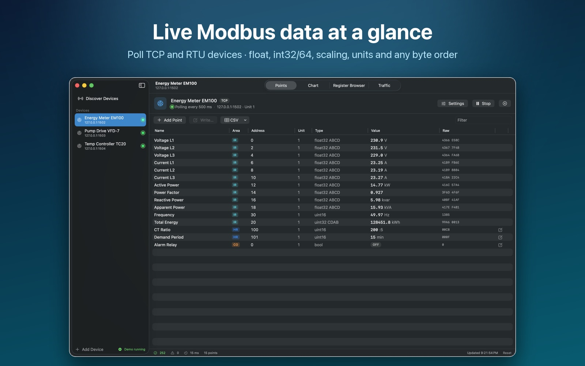
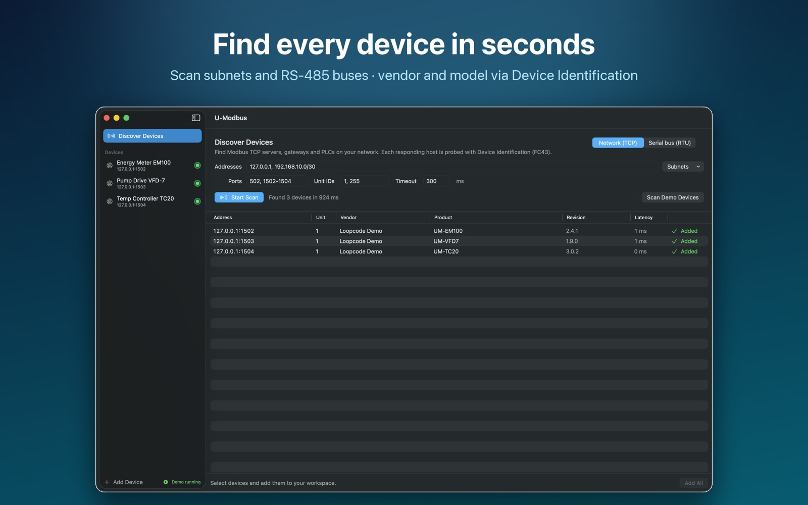
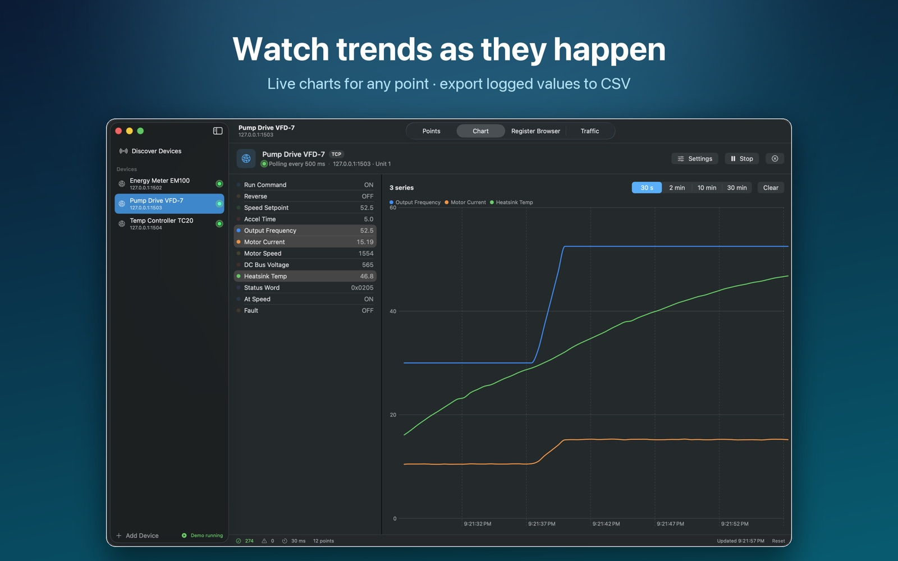

Modbus TCP & RTU Master for macOS
U-Modbus connects your Mac to PLCs, energy meters, drives, controllers and gateways over Modbus TCP, Modbus RTU (RS-485/RS-232 via USB adapters) and RTU over TCP. Discover devices, watch live values, write setpoints safely and see every byte on the wire.

Scan subnets and port ranges, or every slave ID on a serial bus. Vendor, product and revision via Device Identification (FC43/14).
Name your registers, pick int16…int64, uint, float32/64, any byte/word order, scale, offset and units. Requests are merged automatically.
FC05, FC06, FC15 and FC16 with engineering-unit entry, confirmation dialogs, read-back and a per-device read-only lock.
Live trend charts for any point and CSV export of logged values, points and whole workspaces.
Read any block of coils or registers and decode it as integer, float, hex or binary. Add any address as a point.
Timestamped TX/RX frames, exceptions, timeouts and CRC errors — copy or save for troubleshooting.


No hardware at hand? U-Modbus includes three simulated demo devices so you can try every feature right away.